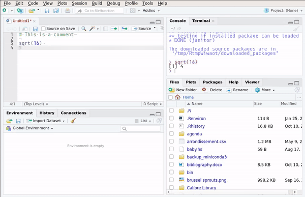
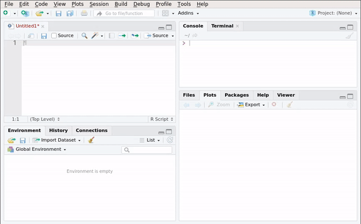
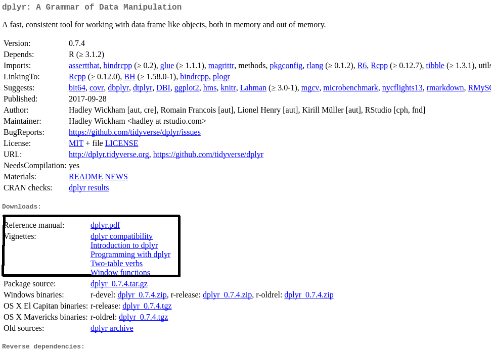

Chapter 1 Getting to know RStudio
RStudio is a company that develops and maintains several products. Their best-known product is an IDE (Integrated development environment) for the R programming language, also called RStudio. You can install RStudio by visiting this link. There is also a server version that can be used to have a centralized version of R within, say, a company. RStudio, the company, also develops Shiny, a package to create full-fledged web-apps. I am not going to cover Shiny in this book, since there’s already a lot of material that you can learn from.
Once you have installed RStudio, launch it and let’s go through the interface together.
1.1 Panes
RStudio is divided into different panes. Each pane has a specific function. The gif below shows some of these panes:

Take some time to look around what each pane shows you. Some panes are empty; for example the Plots pane or the Viewer pane. Plots shows you the plots you make. You can browse the plots and save them. We will see this in more detail in a later chapter. Viewer shows you previews of documents that you generate with R. More on this later.
1.2 Console
The Console pane is where you can execute R code. Write the following in the console:
2 + 3and you’ll get the answer, 5. However, do not write a lot of lines in the console. It is better
write your code inside a script. Output is also shown inside the console.
1.3 Scripts
Look at the gif below:

In this gif, we see the user creating a new R script. R scripts are simple text files that hold R
code. Think of .do files in STATA or .c files for C. R scripts have the extension .r or .R.
It is possible to create a lot of other files. We’ll take a look at R Markdown files in Chapter 11.
1.3.1 The help pane
The Help pane allows you to consult documentation for functions or packages. The gif below shows how it works:

you can also access help using the following syntax: ?lm. This will bring up the documentation for
the function lm(). You can also type ??lm which will look for the string lm in every package.
1.3.2 The Environment pane
The Environment pane shows every object created in the current section. It is especially useful if you have defined lists or have loaded data into R as it makes it easy to explore these more complex objects.
1.4 Options
It is also possible to customize RStudio’s look and feel:

Take some time to go through the options.
1.5 Keyboard shortcuts
It is a good idea to familiarize yourself with at least some keyboard shortcuts. This is more convenient than having to move the mouse around:

If there is only one keyboard shortcut you need to know, it’s Ctrl-Enter that executes a line of code
from your script. However, these other shortcuts are also worth knowing:
CTRL-ALT-R: run entire scriptCTRL-ALT-UP or DOWN: make cursor taller or shorter, allowing you to edit multiple lines at the same timeCTRL-F: Search and replaceALT-UP or DOWN: Move line up or downCTRL-SHIFT-C: Comment/uncomment lineALT-SHIFT-K: Bring up the list of keyboard shortcutsCTRL-SHIFT-M: Insert the pipe operator (%>%, more on this later)CTRL-S: Save script
This is just a few keyboard shortcuts that I personally find useful. However, I strongly advise you to learn and use whatever shortcuts are useful and feel natural to you!
1.6 Projects
One of the best features of RStudio are projects. Creating a project is simple; the gif below shows how you can create a project and how you can switch between projects.

Projects make a lot of things easier, such as managing paths. More on this in the chapter about reading data. Another useful feature of projects is that the scripts you open in project A will stay open even if you switch to another project B, and then switch back to the project A again.
You can also use version control (with git) inside a project. Version control is very useful, but I won’t discuss it here. You can find a lot of resources online to get you started with git.
1.7 History
The History pane saves all the previous lines you executed. You can then select these lines and send them back to the console or the script.

1.8 Plots
All the plots you make during a session are visible in the Plots pane. From there, you can export them in different formats.

The plots shown in the gif are made using basic R functions. Later, we will learn how to make nicer
looking plots using the package ggplot2.
1.9 Addins
Some packages install addins, which are accessible through the addins button:

These addins make it easier to use some functions and you can read more about them here.
My favorite addins are the ones you get when installing the {datapasta} package. Read more about
it here.
There are other panes that I will not discuss here, but you will naturally discover their use as you go. For example, we will discuss the Build pane in Chapter 11.
1.10 Packages
You can think of packages as addons that extend R’s core functionality. You can browse all available
packages on CRAN. To make it easier to find what you might be
interested in, you can also browse the CRAN Task Views.
Each package has a landing page that summarises its dependencies, version number etc. For example,
for the dplyr package: https://cran.r-project.org/web/packages/dplyr/index.html.
Take a look at the Downloads section, and especially at the Reference Manual and Vignettes:

Vignettes are valuable documents; inside vignettes, the purpose of the package is explained in plain English, usually with accompanying examples. The reference manuals list the available functions inside the packages. You can also find vignettes from within Rstudio:

Go to the Packages pane and click on the package you’re interested in. Then you can consult the help for the functions that come with the package as well as the package’s vignettes.
Once you installed a package, you have to load it before you can use it. To load packages you use the
library() function:
library(dplyr)
library(janitor)
# and so on...If you only need to use one single function once, you don’t need to load an entire package. You can write the following:
dplyr::full_join(A, B)using the :: operator, you can access functions from packages without having to load the whole
package beforehand.
It is possible and easy to create your own packages. This is useful if you have to write a lot of functions that you use daily. We will lean about that, in Chapter 10.
1.11 Exercises
Exercise 1
Change the look and feel of RStudio to suit your tastes! I personally like to move the console to the right and use a dark theme. Take some 5 minutes to customize it and browse through all the options.